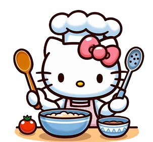

Um refúgio mágico e doce onde sabor e fofura se encontram!

Fundado em Imperatriz, o My Hello Kitty Café nasceu do sonho compartilhado entre Cinnamoroll e Kuromi: criar um refúgio mágico onde a doçura e a travessura se encontram em perfeita harmonia. Desde a nossa fundação, nossa missão é trazer o charme e a nostalgia da Turma da Hello Kitty para o coração de cada cliente. Venha vivenciar uma experiência única, saboreando nossos doces personalizados exclusivos e cafés artísticos, tudo isso em um ambiente tranquilo, acolhedor e totalmente encantador!